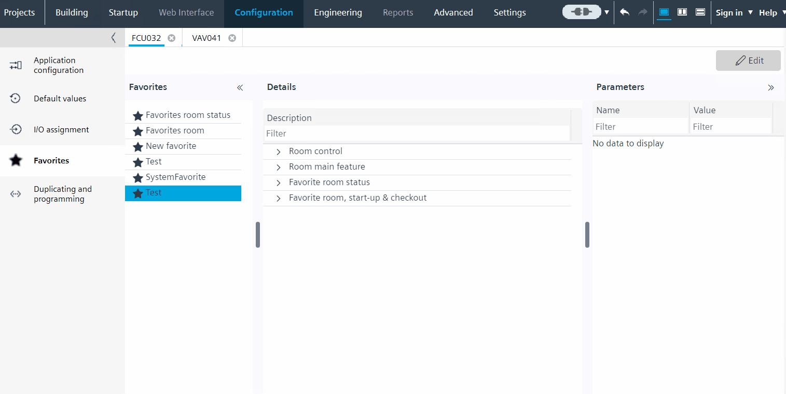

自定义参数列表
您可以自定义Selected parameters列表中的列表Available parameters.

Customize the list of parameters
- You have generated a list of custom favorites automatically
- Open Configuration > Favorites.
- Select an item in the favorites list.
- Click Edit.
- The Parameters window opens to the right. You can see the available parameter values in the Parameters tab.
- Tick the checkbox for the required parameters from the list and Read only option.
- Click Apply on the toolbar.
- You have customized the list of parameters.